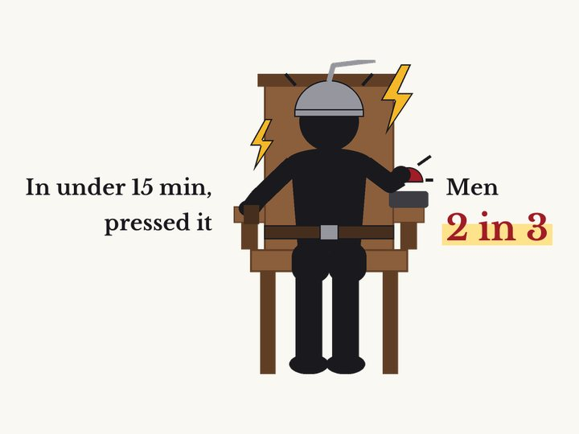

Some people would rather get an electric shock than sit alone with their thoughts
Timothy D. Wilson et al. · Science, 2014

01The result
In a study published in Science in 2014, Timothy Wilson and his team at the University of Virginia sat people alone in a bare room. No phone, no book, no pen. Their only task was to spend 15 minutes with their own thoughts.
There was one button in the room. Pressing it gave a mild electric shock to the ankle. The researchers simply said they could press it if they wanted to.
12 of 18 men and 6 of 24 women pressed the button at least once. One man pressed it 190 times in 15 minutes, so often that he was left out when the averages were calculated.
02Why it's strange
These people did not press it without thinking. Before the test, everyone had felt the same shock once. They had even said they would pay money to avoid feeling it again.
Yet they chose the shock they had wanted to avoid. Fifteen minutes with nothing to do but think was that hard to bear.
The researchers concluded that many people felt even an unpleasant jolt was better than doing nothing at all.
03Not just students
The shock test was one of 11 studies. In the others, people sat alone with their thoughts for 6 to 15 minutes. More than half said it was hard to focus, and about half said it was not very enjoyable.
It was not only college students. People aged 18 to 77 from the community gave similar answers. Age, education, income, and how much they used smartphones or social media made little difference.
To make sure the strange lab was not the problem, college students tried it at home. About one in three admitted they secretly used their phone, listened to music, or got up from their seat.
People enjoyed simple outside activities, like reading or listening to music, more than just thinking.
04Is it the phone's fault?
It is easy to blame smartphones. But the researchers did not see phones as the cause.
It may work the other way around. The mind wants something in the outside world to hold on to, and a phone is the easiest way to give it that.
The fact that many people seek out training like meditation may show how hard it is to stay alone inside our own heads.
05Later research
In 2022, researchers in Japan and the UK asked a different question. Before people sat alone with their thoughts, they guessed how enjoyable it would be. Then the researchers compared that guess with how it actually felt.
Across six experiments with 259 university students, people expected thinking time to be less enjoyable than it turned out to be. The result held in a bare meeting room and in a small, dark booth that blocked out light and sound, and for 3 minutes or 20.
Compared with reading online news, the actual enjoyment was about the same. Yet when asked to choose ahead of time, people picked the news. The problem may be less that people dislike thinking and more that they underrate it and avoid it.
That does not mean thinking was a joy. Ratings were around 3 to 4 out of 7, closer to "better than expected." All participants were students in Japan and the UK.
06What it means
This helps explain why we reach for our phones in an elevator, at a red light, or in a short line. Our minds are not used to empty time.
That is not strange. Most people are like this. If time alone with your thoughts feels awkward, try thinking while you take a walk, or decide in advance what you want to think about.
07Limitations
Only 42 people took part in the shock test, and the shock was mild.
People were told, "Now think." That is different from quiet time you choose for yourself.
Other scholars published a reply. Looking again at the same data, they found that thinking time was rated somewhere in the middle on average, somewhat enjoyable and somewhat boring, and that more than half of the shock-test group never pressed the button. It is hard to conclude that people simply hate thinking.
Corrections
- We corrected the setting of the 2022 follow-up study from "a small, dark tent" to "a small, dark booth that blocked out light and sound." We also corrected three points: the man who pressed 190 times was left out of the averages, not the whole analysis; about half, not most, said thinking alone was not very enjoyable; and the reply paper found average ratings in the middle and that more than half of the shock-test group never pressed the button, rather than that many found thinking fairly pleasant.
Original paper
- Wilson et al. (2014), Science, doi:10.1126/science.1250830
- doi.org/10.1126/science.1250830